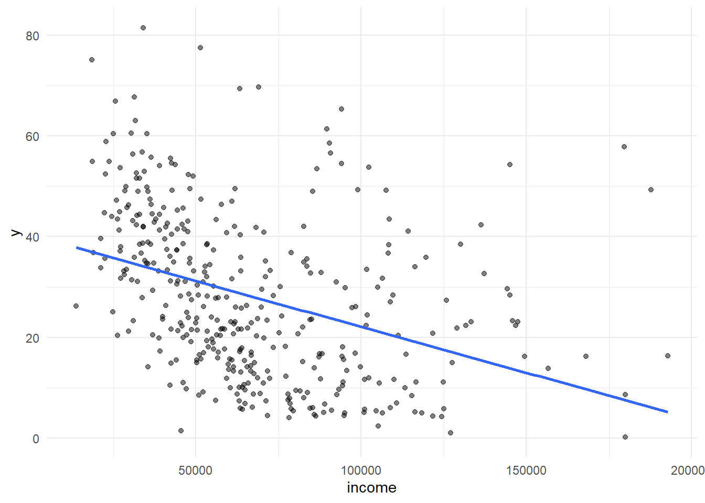
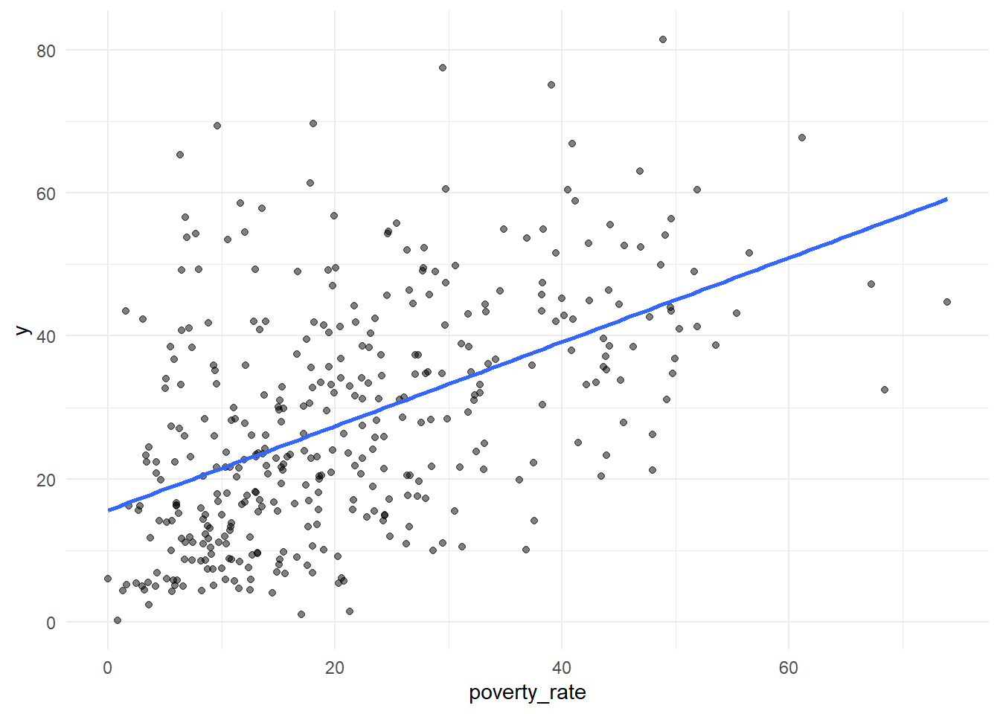
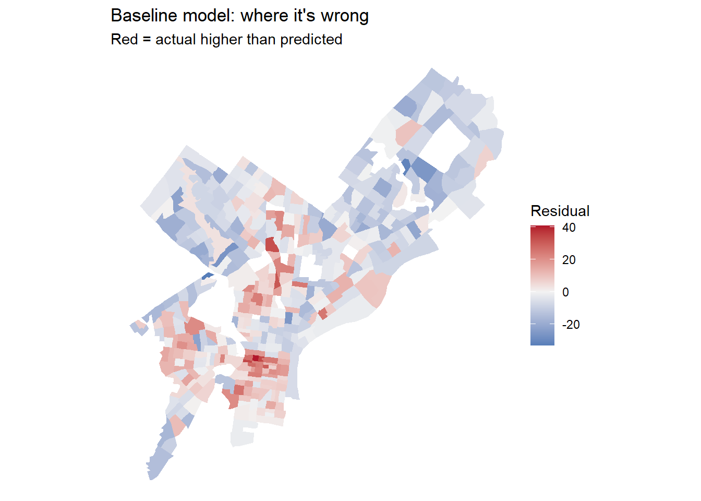
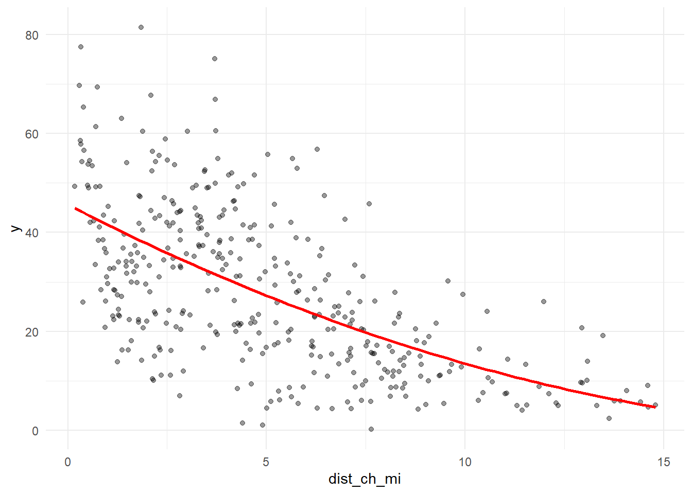
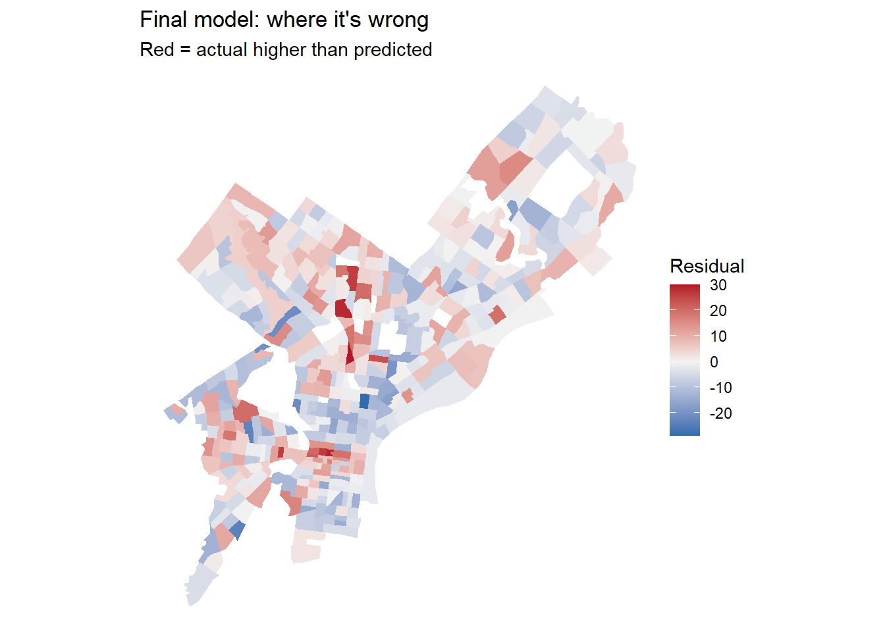
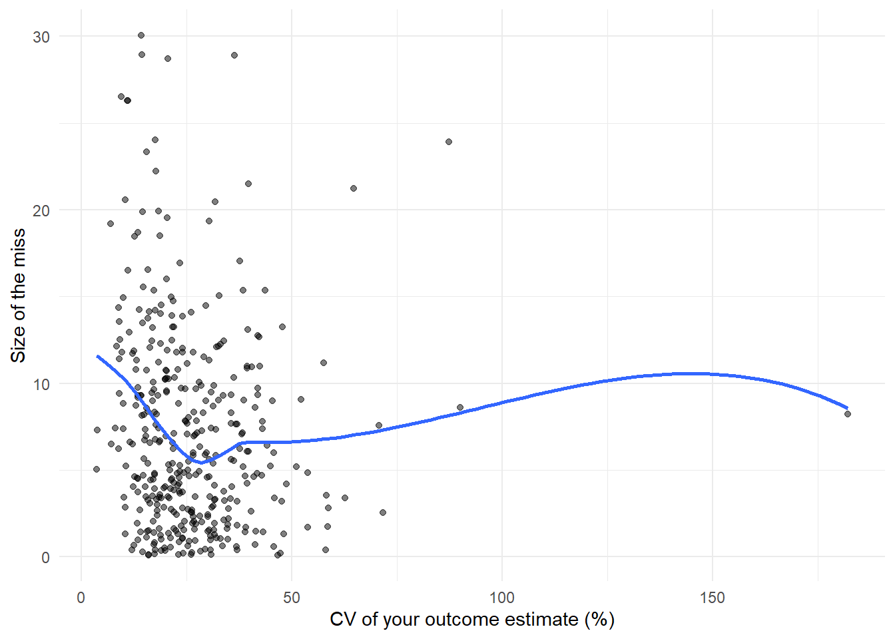

Code
library(tidyverse)
library(tidycensus)
library(sf)
library(caret)
Sys.getenv("CENSUS_API_KEY") != "" # should print TRUE[1] TRUEMUSA 5080 · Integrates Weeks 1–5 · Due Friday, October 16
This is not a competition. There’s no leaderboard and no target RMSE. The goal is to practice the full prediction workflow on a question you choose, and to find out what actually helps. Some features you’re sure will help won’t, and some you add on a whim will. Both are findings.
You’ll:
Timing. Parts 1–4 use only what we’ve covered through Week 5. You can finish them before the October 9 lecture. Part 5 is new material; the lecture explains it, and the instructions below give you the essentials.
Type the code yourself. The worked examples show the pattern. Your job is to apply it to your outcome and your data choices.
Every model is cross-validated on the same tracts with the same folds, so the rows in your model log are comparable. If a new variable has missing values, fill them (for example, 0 for a count, or the median with a note) or choose a different variable. The cv_rmse() helper below will stop and tell you if you break this rule.
Your outcome comes from the 2019–2023 ACS. Pull open data from 2023 or earlier (2021–2023 is ideal). Using 2025 data to predict a 2023 outcome uses information from the future, which a real prediction model would never have.
Don’t use any variable that’s built from your outcome or measures the same thing another way. Ask yourself: would an agency trying to predict this outcome for a tract have this variable? If the answer is “only because it’s basically the outcome,” leave it out.
library(tidyverse)
library(tidycensus)
library(sf)
library(caret)
Sys.getenv("CENSUS_API_KEY") != "" # should print TRUE[1] TRUEThis function runs 10-fold cross-validation with the same seed every time, so every model in your log is tested on the same folds. You don’t need to change it. Read it once so you know what it does.
ctrl <- trainControl(method = "cv", number = 10)
cv_rmse <- function(formula, data) {
df <- if (inherits(data, "sf")) st_drop_geometry(data) else data
vars <- all.vars(formula)
bad <- vars[sapply(vars, function(v) any(is.na(df[[v]])))]
if (length(bad) > 0) {
stop("These variables have NAs: ", paste(bad, collapse = ", "),
". Fill them or choose another variable (Rule 1: don't drop rows).")
}
set.seed(5080)
fit <- train(formula, data = df, method = "lm", trControl = ctrl)
fit$results$RMSE
}Every time you fit a new model, add a row. By the end, this table is the story of your assignment.
model_log <- tibble(
model = character(),
added = character(),
cv_rmse = numeric(),
notes = character()
)Pick a tract-level ACS variable for Philadelphia that matters for policy. Two outcomes are off limits: median gross rent (we did it in lab) and median home value (save it for A4).
Some ideas if you’re stuck:
| Outcome | Why an agency might care | ACS table |
|---|---|---|
| % of households with no vehicle | Transit planning | B08201 or B25044 |
| Mean travel time to work | Access to jobs | B08013_001 ÷ B08303_001 |
| % of people below poverty | Targeting services | B17001 |
| % of housing units vacant | Housing and blight | B25002 |
| % of households overcrowded | Housing conditions | B25014 |
Use load_variables(2023, "acs5") to browse and find exact variable codes.
Choose three to five ACS predictors for your baseline model. They should be things that plausibly relate to your outcome, but none of them may be built from your outcome (Rule 3).
philly_tracts <- get_acs(
geography = "tract",
state = "PA",
county = "Philadelphia",
variables = c(
total_pop = "B01003_001",
# your outcome's numerator and denominator (or median), e.g.:
no_vehicle = "B08201_002",
total_households = "B08201_001",
# Baseline predictor 1: Median household income
median_income = "B19013_001",
# Baseline predictor 2: Poverty rate
poverty_count = "B17001_002",
poverty_total = "B17001_001",
# Baseline predictor 3: Renter percentage
renter_households = "B25003_003",
occupied_households = "B25003_001"
),
year = 2023,
output = "wide",
geometry = TRUE
) %>%
st_transform(2272)
|
| | 0%
|
|= | 1%
|
|= | 2%
|
|== | 3%
|
|=== | 4%
|
|=== | 5%
|
|==== | 5%
|
|==== | 6%
|
|===== | 7%
|
|====== | 8%
|
|====== | 9%
|
|======= | 10%
|
|======= | 11%
|
|======== | 11%
|
|======== | 12%
|
|========= | 12%
|
|========= | 13%
|
|========== | 14%
|
|========== | 15%
|
|=========== | 16%
|
|============ | 17%
|
|============= | 18%
|
|============= | 19%
|
|============== | 20%
|
|=============== | 21%
|
|=============== | 22%
|
|================ | 23%
|
|================= | 24%
|
|================= | 25%
|
|================== | 26%
|
|=================== | 27%
|
|=================== | 28%
|
|==================== | 29%
|
|===================== | 30%
|
|===================== | 31%
|
|====================== | 32%
|
|======================= | 33%
|
|======================= | 34%
|
|======================== | 35%
|
|========================= | 36%
|
|========================== | 37%
|
|=========================== | 38%
|
|============================ | 39%
|
|============================ | 40%
|
|============================= | 41%
|
|============================== | 42%
|
|============================== | 43%
|
|=============================== | 44%
|
|================================ | 45%
|
|================================ | 46%
|
|================================= | 47%
|
|================================== | 48%
|
|================================== | 49%
|
|=================================== | 50%
|
|==================================== | 51%
|
|===================================== | 52%
|
|===================================== | 53%
|
|====================================== | 54%
|
|======================================= | 55%
|
|======================================= | 56%
|
|======================================== | 57%
|
|========================================= | 58%
|
|========================================= | 59%
|
|========================================== | 60%
|
|=========================================== | 61%
|
|=========================================== | 62%
|
|============================================ | 63%
|
|============================================= | 64%
|
|============================================= | 65%
|
|============================================== | 66%
|
|=============================================== | 67%
|
|================================================ | 68%
|
|================================================ | 69%
|
|================================================= | 70%
|
|================================================== | 71%
|
|================================================== | 72%
|
|=================================================== | 73%
|
|==================================================== | 74%
|
|==================================================== | 75%
|
|===================================================== | 76%
|
|====================================================== | 77%
|
|====================================================== | 78%
|
|======================================================= | 79%
|
|======================================================== | 80%
|
|======================================================== | 81%
|
|========================================================= | 82%
|
|========================================================== | 83%
|
|========================================================== | 84%
|
|=========================================================== | 85%
|
|============================================================ | 86%
|
|============================================================= | 87%
|
|============================================================= | 88%
|
|============================================================== | 88%
|
|=============================================================== | 89%
|
|=============================================================== | 90%
|
|================================================================ | 91%
|
|================================================================= | 92%
|
|================================================================= | 93%
|
|================================================================== | 94%
|
|=================================================================== | 95%
|
|=================================================================== | 96%
|
|==================================================================== | 97%
|
|===================================================================== | 98%
|
|===================================================================== | 99%
|
|======================================================================| 100%philly_tracts <- philly_tracts %>%
mutate(
# Outcome: percentage of households with no vehicle
y = no_vehicleE / total_householdsE * 100,
# Margin of error for the outcome percentage
y_moe = moe_prop(
num = no_vehicleE,
denom = total_householdsE,
moe_num = no_vehicleM,
moe_denom = total_householdsM
) * 100,
# Coefficient of variation
y_cv = (y_moe / 1.645) / y * 100,
# Baseline predictors
income = median_incomeE,
poverty_rate = poverty_countE / poverty_totalE * 100,
renter_pct = renter_householdsE / occupied_householdsE * 100
)Before you commit, check three things.
# How many tracts have no value for your outcome?
sum(is.na(philly_tracts$y))[1] 20# How reliable is it?
summary(philly_tracts$y_cv) Min. 1st Qu. Median Mean 3rd Qu. Max. NA's
3.572 17.204 23.410 Inf 31.959 Inf 20 philly_tracts %>%
mutate(reliability = case_when(
y_cv < 12 ~ "High",
y_cv <= 40 ~ "Moderate",
TRUE ~ "Low"
)) %>%
st_drop_geometry() %>%
count(reliability) reliability n
1 High 29
2 Low 66
3 Moderate 313# What does the distribution look like?
ggplot(philly_tracts, aes(x = y)) +
geom_histogram(bins = 30) +
theme_minimal()
If more than about a third of tracts have low reliability, consider a different outcome, or one built from larger counts. Write your reasoning either way.
Answer (2–3 sentences): What is your outcome, why would an agency want to predict it, and how reliable is it?
Your answer: My outcome is the percentage of households without access to a vehicle across Philadelphia census tracts. Predicting this outcome could help transportation planning agencies identify communities with potentially greater reliance on public transit and prioritize transportation investments. The ACS estimates are reasonably reliable for modeling, with 29 tracts classified as high reliability, 313 as moderate, and 66 as low or having unavailable CV values; 20 tracts also have missing outcome values.
Filter once, here, and never again. Every later step uses tracts.
tracts <- philly_tracts %>%
filter(
total_popE > 0,
is.finite(y),
is.finite(income),
is.finite(poverty_rate),
is.finite(renter_pct)
)
nrow(philly_tracts)[1] 408nrow(tracts)[1] 381Answer: How many tracts did you lose, and what kinds of places are they?
Your answer: Of the original 408 census tracts in Philadelphia, 27 were excluded due to zero population, missing outcome values, or invalid baseline predictors, leaving 381 tracts for modeling. These excluded tracts include areas with no recorded residential population or insufficient ACS data; their specific land uses have not yet been verified.
Plot your outcome against each predictor before modeling (the Week 3 habit).
# Predictor 1: Median household income
ggplot(tracts, aes(x = income, y = y)) +
geom_point(alpha = 0.5) +
geom_smooth(method = "lm", se = FALSE) +
theme_minimal()
# Predictor 2: Poverty rate
ggplot(tracts, aes(x = poverty_rate, y = y)) +
geom_point(alpha = 0.5) +
geom_smooth(method = "lm", se = FALSE) +
theme_minimal()
# Predictor 3: Renter percentage
ggplot(tracts, aes(x = renter_pct, y = y)) +
geom_point(alpha = 0.5) +
geom_smooth(method = "lm", se = FALSE) +
theme_minimal()
f1 <- y ~ income + poverty_rate + renter_pct
m1 <- lm(f1, data = tracts)
summary(m1)
Call:
lm(formula = f1, data = tracts)
Residuals:
Min 1Q Median 3Q Max
-33.236 -7.837 -1.569 7.624 40.933
Coefficients:
Estimate Std. Error t value Pr(>|t|)
(Intercept) 1.814e+00 3.178e+00 0.571 0.569
income -9.025e-06 2.651e-05 -0.340 0.734
poverty_rate 3.731e-01 6.491e-02 5.748 1.87e-08 ***
renter_pct 3.938e-01 3.199e-02 12.311 < 2e-16 ***
---
Signif. codes: 0 '***' 0.001 '**' 0.01 '*' 0.05 '.' 0.1 ' ' 1
Residual standard error: 11.92 on 377 degrees of freedom
Multiple R-squared: 0.4687, Adjusted R-squared: 0.4644
F-statistic: 110.8 on 3 and 377 DF, p-value: < 2.2e-16model_log <- model_log %>%
add_row(
model = "m1",
added = "ACS baseline",
cv_rmse = cv_rmse(f1, tracts),
notes = "Income, poverty rate, and renter percentage"
)
model_log# A tibble: 1 × 4
model added cv_rmse notes
<chr> <chr> <dbl> <chr>
1 m1 ACS baseline 11.9 Income, poverty rate, and renter percentageWrite the CV RMSE as a sentence, in your outcome’s units: “On tracts it hasn’t seen, the baseline model has a 10-fold cross-validation RMSE of 11.94 percentage points. On census tracts it has not seen during training, the model’s prediction errors are approximately 11.94 percentage points in RMSE terms.”
Save this map. You’ll compare it to your final model’s map in Part 6.
tracts <- tracts %>% mutate(resid_m1 = residuals(m1))
ggplot(tracts) +
geom_sf(aes(fill = resid_m1), color = NA) +
scale_fill_gradient2(low = "#2166ac", mid = "grey95", high = "#b2182b", midpoint = 0) +
theme_void() +
labs(title = "Baseline model: where it's wrong",
subtitle = "Red = actual higher than predicted",
fill = "Residual")
Answer: Where do the residuals cluster? What might those places have in common that your model doesn’t know about? Use this answer to choose your open data layers in Part 3.
Your answer: The baseline residual map shows clusters of positive residuals in parts of central and southern Philadelphia, suggesting that the model underestimates the percentage of households without vehicles in these areas. Negative residuals appear in several western and northeastern areas, indicating overestimation. These spatial patterns suggest that the model may be missing neighborhood characteristics such as transit accessibility, urban density, and proximity to major destinations, which could influence vehicle ownership beyond income, poverty, and renter status.
Many of the city’s datasets on OpenDataPhilly are served through a Carto SQL API. You send a SQL query in a URL, and it sends back data. Ask for format=GeoJSON and st_read() reads the result directly, just like the Indego feed in Week 4.
The pattern:
https://phl.carto.com/api/v2/sql?format=GeoJSON&q=SELECT ... FROM table_name WHERE ...Three pieces of SQL are all you need:
SELECT the_geom, column1, column2 chooses which columns come back. Always include the_geom, or you get no geometry.FROM table_name chooses the dataset.WHERE ... filters rows. Filter in the query, not in R. Some tables have millions of rows, and pulling everything will be slow or fail.This helper builds the URL for you. Spaces and symbols in a URL need encoding, and URLencode() handles that.
carto_get <- function(sql) {
url <- paste0("https://phl.carto.com/api/v2/sql?format=GeoJSON&q=", URLencode(sql))
st_read(url, quiet = TRUE)
}On a dataset’s OpenDataPhilly page, look for the API link. The table name is the word after FROM in the example query. To see what values a column takes before you filter on it, ask for a count in CSV format:
# What kinds of crime are in the incidents table in 2023?
url <- paste0("https://phl.carto.com/api/v2/sql?format=csv&q=",
URLencode("SELECT text_general_code, COUNT(*) AS n
FROM incidents_part1_part2
WHERE dispatch_date >= '2023-01-01' AND dispatch_date < '2024-01-01'
GROUP BY text_general_code ORDER BY n DESC"))
read_csv(url)# A tibble: 32 × 2
text_general_code n
<chr> <dbl>
1 Thefts 37054
2 Other Assaults 25986
3 Motor Vehicle Theft 22478
4 Vandalism/Criminal Mischief 17346
5 All Other Offenses 13334
6 Theft from Vehicle 13002
7 Fraud 7661
8 Aggravated Assault No Firearm 5134
9 Burglary Residential 3800
10 Aggravated Assault Firearm 3320
# ℹ 22 more rowsburglary <- carto_get(
"SELECT the_geom, text_general_code, dispatch_date
FROM incidents_part1_part2
WHERE dispatch_date >= '2023-01-01' AND dispatch_date < '2024-01-01'
AND text_general_code = 'Burglary Residential'"
) %>%
st_transform(st_crs(tracts)) # Carto returns EPSG 4326; translate immediately
nrow(burglary)[1] 3800# Check missing geometry
sum(st_is_empty(burglary))[1] 119# Remove records without geometry
burglary <- burglary %>%
filter(!st_is_empty(.))
# Check remaining records
nrow(burglary)[1] 3681Some records have no location. Drop them with filter(!st_is_empty(burglary)), and count how many you lost. Every point you drop is a point that won’t be counted.
These tables were available on Carto as of this fall. If a query fails, check the dataset’s OpenDataPhilly page for the current table name.
| Data | Table | Filter on | Notes |
|---|---|---|---|
| Crime incidents | incidents_part1_part2 |
dispatch_date, text_general_code |
Pick specific offense types |
| Shooting victims | shootings |
date_ |
Small enough to pull several years |
| 311 requests | public_cases_fc |
requested_datetime, service_name |
Use the count query above to see service names |
| Indego stations | (not Carto) https://www.rideindego.com/stations/json/ |
— | The Week 4 feed |
Datasets not on Carto often have a GeoJSON download link on their OpenDataPhilly page. st_read() reads those URLs too. For example, navigage to https://opendataphilly.org/, find a dataset that you’d like to import. I found city landmarks. On the page there is a link to a GeoJSON file. I simply right-clicked on that hyperlink and copied it and then used st_read() and pasted the link:
landmarks <- st_read(“https://hub.arcgis.com/api/v3/datasets/6b2fe4a0fbe14e0a8e6afceaea230b8e_0/downloads/data?format=geojson&spatialRefId=4326&where=1%3D1”)
Pull at least two layers that you think relate to your outcome. Base your choice on your Part 2C answer.
# Layer 1: Residential burglary incidents in 2023
layer1 <- burglary
# Layer 2: Street light outage requests in 2023
layer2 <- carto_get(
"SELECT the_geom, service_name, requested_datetime
FROM public_cases_fc
WHERE requested_datetime >= '2023-01-01'
AND requested_datetime < '2024-01-01'
AND service_name = 'Street Light Outage'"
) %>%
st_transform(st_crs(tracts))
nrow(layer1)[1] 3681nrow(layer2)[1] 12861# Check missing geometry
sum(st_is_empty(layer2))[1] 5# Remove records without geometry
layer2 <- layer2 %>%
filter(!st_is_empty(.))
# Check remaining records
nrow(layer2)[1] 12856Answer: Why these layers? What do you expect them to capture that the ACS variables don’t?
Your answer: I used residential burglary incidents and street light outage requests from 2023 to capture neighborhood conditions not directly represented by the ACS socioeconomic variables. Residential burglaries may reflect aspects of neighborhood safety, while street light outage requests may indicate street infrastructure maintenance issues and nighttime pedestrian conditions. I want to test whether these spatial characteristics improve the prediction of vehicle ownership patterns beyond income, poverty, and renter percentage.
Every feature below reuses a Week 4 tool. The worked examples use burglaries and Indego stations; you build the same types from your own layers.
How many burglaries fall in each tract?
tracts <- tracts %>%
mutate(n_burglary = lengths(st_intersects(., burglary)))
summary(tracts$n_burglary) Min. 1st Qu. Median Mean 3rd Qu. Max.
0.000 4.000 7.000 9.446 13.000 48.000 A tract with no burglaries gets 0, not NA, so Rule 1 is safe.
Raw counts mostly measure tract size. A big tract has more of everything. Normalize by area, by population, or by housing units, depending on what makes sense for the thing you’re counting.
tracts <- tracts %>%
mutate(
area_sqmi = as.numeric(st_area(.)) / 27878400, # sq ft in a sq mile
burglary_per_sqmi = n_burglary / area_sqmi,
burglary_per_1k = n_burglary / total_popE * 1000
)If a tract has 40 residents and 3 burglaries, its rate is 75 per 1,000, which is a huge number built on tiny counts. Look at the tracts with the highest per-capita rates before you trust them. This is the Week 3 lesson about small denominators again.
How far is each tract from its nearest Indego station? Use the Week 4 pattern: find the nearest feature, then measure to it element by element.
stations <- st_read("https://www.rideindego.com/stations/json/", quiet = TRUE) %>%
st_transform(st_crs(tracts))
tract_pts <- st_point_on_surface(tracts) # always inside the tract, unlike a centroid
nearest_idx <- st_nearest_feature(tract_pts, stations)
tracts <- tracts %>%
mutate(dist_station_mi = as.numeric(
st_distance(tract_pts, stations[nearest_idx, ], by_element = TRUE)) / 5280)Sometimes the “thing” is a single location, such as City Hall as a stand-in for the center of the regional economy.
city_hall <- st_sfc(st_point(c(-75.1636, 39.9526)), crs = 4326) %>%
st_transform(st_crs(tracts))
tracts <- tracts %>%
mutate(dist_ch_mi = as.numeric(st_distance(tract_pts, city_hall)) / 5280)Build at least three spatial features from your own layers, and use at least two types (count, density, nearest distance, distance to a place). After each one, fit a model, cross-validate it, and log it.
# Build spatial feature 1: Residential burglary count
tracts <- tracts %>%
mutate(burglary_count = lengths(st_intersects(., layer1)))
# Model 2: Add burglary count to the ACS baseline
f2 <- y ~ income + poverty_rate + renter_pct + burglary_count
model_log <- model_log %>%
add_row(
model = "m2",
added = "Residential burglary count",
cv_rmse = cv_rmse(f2, tracts),
notes = "Added burglary count to ACS baseline"
)
# Repeat for each feature
model_log# A tibble: 2 × 4
model added cv_rmse notes
<chr> <chr> <dbl> <chr>
1 m1 ACS baseline 11.9 Income, poverty rate, and renter per…
2 m2 Residential burglary count 11.7 Added burglary count to ACS baseline # Model 3: Add burglary density
f3 <- y ~ income + poverty_rate + renter_pct +
burglary_count + burglary_per_sqmi
model_log <- model_log %>%
add_row(
model = "m3",
added = "Residential burglary density",
cv_rmse = cv_rmse(f3, tracts),
notes = "Added burglary density per square mile"
)
model_log# A tibble: 3 × 4
model added cv_rmse notes
<chr> <chr> <dbl> <chr>
1 m1 ACS baseline 11.9 Income, poverty rate, and renter p…
2 m2 Residential burglary count 11.7 Added burglary count to ACS baseli…
3 m3 Residential burglary density 11.2 Added burglary density per square …# Spatial feature 3: Street light outage count
tracts <- tracts %>%
mutate(
n_light_outage = lengths(st_intersects(., layer2))
)
# Model 4
f4 <- y ~ income + poverty_rate + renter_pct +
burglary_count + burglary_per_sqmi + n_light_outage
model_log <- model_log %>%
add_row(
model = "m4",
added = "Street light outage count",
cv_rmse = cv_rmse(f4, tracts),
notes = "Added 2023 street light outage requests"
)
model_log# A tibble: 4 × 4
model added cv_rmse notes
<chr> <chr> <dbl> <chr>
1 m1 ACS baseline 11.9 Income, poverty rate, and renter p…
2 m2 Residential burglary count 11.7 Added burglary count to ACS baseli…
3 m3 Residential burglary density 11.2 Added burglary density per square …
4 m4 Street light outage count 11.2 Added 2023 street light outage req…# Spatial feature 4: Street light outage density
tracts <- tracts %>%
mutate(
light_outage_per_sqmi = n_light_outage / area_sqmi
)
# Model 5: Add street light outage density
f5 <- y ~ income + poverty_rate + renter_pct +
burglary_count + burglary_per_sqmi +
n_light_outage + light_outage_per_sqmi
model_log <- model_log %>%
add_row(
model = "m5",
added = "Street light outage density",
cv_rmse = cv_rmse(f5, tracts),
notes = "Added street light outage requests per square mile"
)
model_log# A tibble: 5 × 4
model added cv_rmse notes
<chr> <chr> <dbl> <chr>
1 m1 ACS baseline 11.9 Income, poverty rate, and renter p…
2 m2 Residential burglary count 11.7 Added burglary count to ACS baseli…
3 m3 Residential burglary density 11.2 Added burglary density per square …
4 m4 Street light outage count 11.2 Added 2023 street light outage req…
5 m5 Street light outage density 10.5 Added street light outage requests…Answer: Which spatial feature helped most? Did any feature you expected to help do nothing, or make CV RMSE worse? Why might that be?
Your answer: Street light outage density produced the largest improvement in cross-validation performance, reducing CV RMSE from 11.15 to 10.52 percentage points. Residential burglary density also improved prediction, while the raw street light outage count provided very little additional benefit. This suggests that spatially normalized measures may capture neighborhood conditions more effectively than raw counts, which can be influenced by tract size. However, 311 request patterns may also reflect differences in reporting behavior rather than actual infrastructure conditions.
Watch the October 9 recorded lecture before you start this part. Below is a summary to work from.
So far, every predictor has entered the model as a straight line: each additional unit of X changes predicted Y by the same amount, everywhere. Transformations let the model bend. For prediction, the question is simply does the bend lower CV RMSE? For interpretation, each transformation changes what a coefficient means, so you need to know how to read it.
Keep your outcome y untransformed in this assignment. If you model log(y), your CV RMSE comes out in log units and can’t be compared to the other rows in your log. (Predicting a logged outcome well requires back-transforming, which is an A4 topic.)
Many urban variables are skewed: a few tracts have huge values, and most have small ones. Income, density, and counts are typical. A log compresses the long tail, so a model can use the difference between 1 and 10 as well as the difference between 100 and 1,000.
ggplot(tracts, aes(x = burglary_per_sqmi)) + geom_histogram(bins = 30) + theme_minimal()
ggplot(tracts, aes(x = log1p(burglary_per_sqmi))) + geom_histogram(bins = 30) + theme_minimal()
log(0) is -Inf, and it will break your model. Counts and densities often include zeros. Use log1p(x), which computes log(x + 1), for anything that can be 0.
Reading the coefficient: when a predictor is logged, a 1% increase in X goes with a change of about β/100 in Y, in Y’s units. With log1p, this reading is approximate for small values of X.
If your scatterplot bends (rising and then flattening, or falling and then rising), a squared term lets the line curve. Write it with I(), which tells R to do the arithmetic rather than read ^ as formula syntax.
m_sq <- lm(y ~ dist_ch_mi + I(dist_ch_mi^2), data = tracts)
summary(m_sq)
Call:
lm(formula = y ~ dist_ch_mi + I(dist_ch_mi^2), data = tracts)
Residuals:
Min 1Q Median 3Q Max
-27.721 -8.549 -0.983 7.699 43.547
Coefficients:
Estimate Std. Error t value Pr(>|t|)
(Intercept) 45.62849 1.78168 25.610 < 2e-16 ***
dist_ch_mi -4.14563 0.64648 -6.413 4.27e-10 ***
I(dist_ch_mi^2) 0.09331 0.04854 1.922 0.0553 .
---
Signif. codes: 0 '***' 0.001 '**' 0.01 '*' 0.05 '.' 0.1 ' ' 1
Residual standard error: 12.87 on 378 degrees of freedom
Multiple R-squared: 0.3792, Adjusted R-squared: 0.3759
F-statistic: 115.4 on 2 and 378 DF, p-value: < 2.2e-16Reading the coefficient: you can’t read either coefficient alone anymore. The effect of X depends on where you are along X. A positive linear term with a negative squared term means Y rises with X and then levels off or turns down. Plot the fitted curve to see it:
ggplot(tracts, aes(x = dist_ch_mi, y = y)) +
geom_point(alpha = 0.4) +
geom_smooth(method = "lm", formula = y ~ x + I(x^2), se = FALSE, color = "red") +
theme_minimal()
Sometimes a number works better as groups, either because the relationship isn’t smooth or because the categories are meaningful. You can make categories from any variable with case_when() or cut(), and then make sure R treats them as a factor.
tracts <- tracts %>%
mutate(
ring = case_when(
dist_ch_mi < 2 ~ "Core",
dist_ch_mi < 5 ~ "Inner",
TRUE ~ "Outer"
),
ring = factor(ring, levels = c("Core", "Inner", "Outer"))
)
tracts %>% st_drop_geometry() %>% count(ring) ring n
1 Core 79
2 Inner 134
3 Outer 168m_cat <- lm(y ~ ring, data = tracts)
summary(m_cat)
Call:
lm(formula = y ~ ring, data = tracts)
Residuals:
Min 1Q Median 3Q Max
-33.724 -10.328 -1.487 8.377 42.965
Coefficients:
Estimate Std. Error t value Pr(>|t|)
(Intercept) 38.461 1.521 25.289 <2e-16 ***
ringInner -3.650 1.917 -1.904 0.0577 .
ringOuter -20.512 1.844 -11.123 <2e-16 ***
---
Signif. codes: 0 '***' 0.001 '**' 0.01 '*' 0.05 '.' 0.1 ' ' 1
Residual standard error: 13.52 on 378 degrees of freedom
Multiple R-squared: 0.3154, Adjusted R-squared: 0.3118
F-statistic: 87.09 on 2 and 378 DF, p-value: < 2.2e-16Reading the coefficients: R turns a factor with k categories into k − 1 dummy variables. The category left out is the reference level (here, “Core,” the first level). Each coefficient is the difference from the reference: ringOuter is how much higher or lower predicted Y is in outer tracts compared to core tracts, holding everything else in the model constant. To change the reference, use relevel(ring, ref = "Outer").
If a category has only a handful of tracts, its coefficient is unstable, and in cross-validation some folds may not contain it at all. Aim for at least 20 tracts per category.
Try at least one of each: a log, a squared term, and a categorical variable. Choose which variables to transform based on your plots, not at random. Log each model.
# Log transformation of burglary density
f_log <- y ~ income + poverty_rate + renter_pct +
burglary_count + log1p(burglary_per_sqmi) +
n_light_outage + light_outage_per_sqmi
model_log <- model_log %>%
add_row(
model = "m6",
added = "Log of burglary density",
cv_rmse = cv_rmse(f_log, tracts),
notes = "Replaced raw burglary density with log1p density"
)
# squared term
f_sq <- y ~ income + poverty_rate + renter_pct +
burglary_count + burglary_per_sqmi +
n_light_outage + light_outage_per_sqmi +
dist_ch_mi + I(dist_ch_mi^2)
model_log <- model_log %>%
add_row(
model = "m7",
added = "Distance to City Hall and squared term",
cv_rmse = cv_rmse(f_sq, tracts),
notes = "Added linear and quadratic distance terms to m5"
)
# categorical
f_cat <- y ~ income + poverty_rate + renter_pct +
burglary_count + burglary_per_sqmi +
n_light_outage + light_outage_per_sqmi +
ring
model_log <- model_log %>%
add_row(
model = "m8",
added = "Categorical distance rings",
cv_rmse = cv_rmse(f_cat, tracts),
notes = "Replaced continuous distance terms with Core, Inner, and Outer categories"
)
model_log# A tibble: 8 × 4
model added cv_rmse notes
<chr> <chr> <dbl> <chr>
1 m1 ACS baseline 11.9 Income, poverty rate, an…
2 m2 Residential burglary count 11.7 Added burglary count to …
3 m3 Residential burglary density 11.2 Added burglary density p…
4 m4 Street light outage count 11.2 Added 2023 street light …
5 m5 Street light outage density 10.5 Added street light outag…
6 m6 Log of burglary density 10.5 Replaced raw burglary de…
7 m7 Distance to City Hall and squared term 9.47 Added linear and quadrat…
8 m8 Categorical distance rings 9.80 Replaced continuous dist…Answer: Which transformation helped most? For your categorical variable, write one sentence reading one of its coefficients correctly, naming the reference level.
Your answer: The model with linear and squared distance to City Hall performed best, achieving a CV RMSE of 9.47 percentage points, compared with 10.52 for the original spatial model. The log transformation of burglary density slightly worsened prediction (10.54), while categorical distance rings improved performance (9.80) but did not outperform the quadratic-distance model. In the categorical model, the Outer ring coefficient is −15.00, meaning that tracts at least five miles from City Hall are predicted to have a no-vehicle household percentage 15.00 percentage points lower than tracts in the Core ring (the reference category), holding other predictors constant.
Combine the features and transformations that earned their place, judged by CV RMSE, not p-values.
f_final <- y ~ income + poverty_rate + renter_pct +
burglary_count + burglary_per_sqmi +
n_light_outage + light_outage_per_sqmi +
dist_ch_mi + I(dist_ch_mi^2)
m_final <- lm(f_final, data = tracts)
summary(m_final)
Call:
lm(formula = f_final, data = tracts)
Residuals:
Min 1Q Median 3Q Max
-28.8967 -6.2202 -0.9489 5.2527 30.0453
Coefficients:
Estimate Std. Error t value Pr(>|t|)
(Intercept) 4.148e+01 4.909e+00 8.450 6.70e-16 ***
income -1.600e-04 2.448e-05 -6.535 2.10e-10 ***
poverty_rate 1.597e-01 5.477e-02 2.915 0.00377 **
renter_pct 1.828e-01 3.140e-02 5.824 1.25e-08 ***
burglary_count -1.043e-03 1.283e-01 -0.008 0.99351
burglary_per_sqmi 1.796e-02 1.910e-02 0.940 0.34785
n_light_outage -6.543e-02 3.924e-02 -1.668 0.09621 .
light_outage_per_sqmi 1.349e-02 5.974e-03 2.258 0.02450 *
dist_ch_mi -4.722e+00 6.264e-01 -7.538 3.69e-13 ***
I(dist_ch_mi^2) 2.152e-01 4.224e-02 5.094 5.60e-07 ***
---
Signif. codes: 0 '***' 0.001 '**' 0.01 '*' 0.05 '.' 0.1 ' ' 1
Residual standard error: 9.406 on 371 degrees of freedom
Multiple R-squared: 0.6747, Adjusted R-squared: 0.6668
F-statistic: 85.5 on 9 and 371 DF, p-value: < 2.2e-16model_log <- model_log %>%
add_row(
model = "final",
added = "Spatial features and quadratic distance",
cv_rmse = cv_rmse(f_final, tracts),
notes = "Selected m7 based on lowest CV RMSE"
)
model_log# A tibble: 9 × 4
model added cv_rmse notes
<chr> <chr> <dbl> <chr>
1 m1 ACS baseline 11.9 Income, poverty rate, a…
2 m2 Residential burglary count 11.7 Added burglary count to…
3 m3 Residential burglary density 11.2 Added burglary density …
4 m4 Street light outage count 11.2 Added 2023 street light…
5 m5 Street light outage density 10.5 Added street light outa…
6 m6 Log of burglary density 10.5 Replaced raw burglary d…
7 m7 Distance to City Hall and squared term 9.47 Added linear and quadra…
8 m8 Categorical distance rings 9.80 Replaced continuous dis…
9 final Spatial features and quadratic distance 9.47 Selected m7 based on lo…tracts <- tracts %>% mutate(resid_final = residuals(m_final))
ggplot(tracts) +
geom_sf(aes(fill = resid_final), color = NA) +
scale_fill_gradient2(low = "#2166ac", mid = "grey95", high = "#b2182b", midpoint = 0) +
theme_void() +
labs(title = "Final model: where it's wrong",
subtitle = "Red = actual higher than predicted",
fill = "Residual")
Put your two residual maps side by side, or put them next to each other in the rendered document. Did the clusters from Part 2C shrink? Where did they stay?
ggplot(tracts, aes(x = y_cv, y = abs(resid_final))) +
geom_point(alpha = 0.5) +
geom_smooth(se = FALSE) +
labs(x = "CV of your outcome estimate (%)", y = "Size of the miss") +
theme_minimal()
Answer in prose, drawing on your model log (incorporate our words of the day for bonus points. just kidding):
Your answer: ### Reflection
This assignment showed that spatial features can improve predictions of household vehicle availability beyond traditional ACS socioeconomic variables. The baseline model had a cross-validated RMSE of 11.94 percentage points, which decreased to 9.47 in the final model, representing an improvement of approximately 20.7%. Among the individual spatial features tested, street light outage density provided the largest incremental improvement, reducing CV RMSE from 11.15 to 10.52. In contrast, raw street light outage counts contributed very little additional predictive value. This suggests that normalizing spatial events by area may capture neighborhood differences more effectively than raw counts. The addition of distance to City Hall and its squared term further improved prediction, highlighting the importance of geographic location.
One coefficient in the final model is renter percentage (β̂ = 0.1828). In coefficient terms, holding the other predictors constant, a one-percentage-point increase in renter households is associated with a 0.183-percentage-point increase in the predicted share of households without vehicles. In prediction terms, two otherwise identical tracts with renter percentages of 40% and 50% would have predicted no-vehicle household shares differing by approximately 1.83 percentage points.
The final residual map shows smaller prediction errors than the baseline, but some clusters remain in central and southern Philadelphia. The model may still be missing factors such as public transit accessibility, parking availability, and walkability. Historical SEPTA transit stop and service data could provide additional spatial predictors.
Finally, the relationship between ACS uncertainty and prediction error is not straightforward. Large residuals occur even in tracts with relatively low coefficients of variation, while the high-CV observations are relatively sparse. Therefore, some remaining error may reflect ACS sampling uncertainty, but omitted neighborhood characteristics, model limitations, and statistical noise also likely contribute.
Render this document to HTML and submit the link on Canvas by Friday, October 16. I’ll miss you all terribly while I’m away. Please send letters or correspondences to my office mailbox.